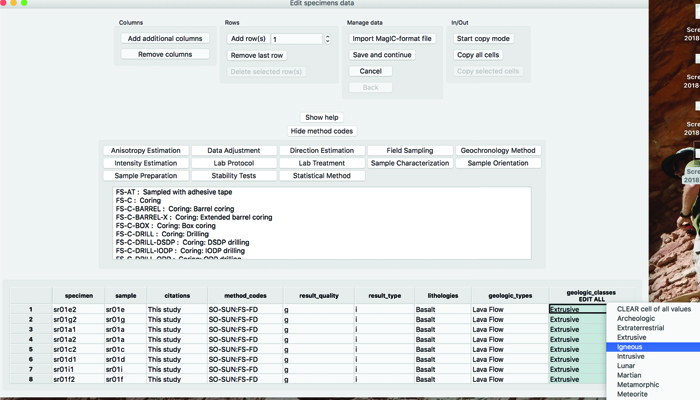

Installing and Getting Started with Pmag GUI#
Pmag GUI is a Graphical User Interface (GUI) that provides a path to the some workflows enabled by PmagPy namely:
the conversion of lab format data to MagIC format
the interpretation of paleomagnetic directional data
the interpretation of Thellier-type paleointensity data. The work flow is illustrated schematically here:
{kind=link}
There are two ways to launch Pmag GUI. The first is to have downloaded it as an executable program in which case it can be opened as a typical application with a double-click.
Standalone executable program#
The Pmag GUI program can be downloaded at these links:
The first time you open the Mac version, you need to right-click and select open. You may need to right-click and select open twice.
You may need to click through a warning about unidentified developers.
Note that these applications take a long time to load. When you open the application, it can look like nothing is happening for a while before opening. Please be patient.
Launching Pmag GUI on the command line#
The other way that Pmag GUI can be launched is from the command line fif you have a full PmagPy installation. To open it in this way you can follow these steps:
Make sure you have followed all of the steps in the Installing PmagPy section.
Open your command prompt and start Pmag GUI with the appropriate command (pmag_gui.py, pmag_gui_anaconda, or pmag_gui). If you are confused about which command to use, see this section for details.
Getting going with Pmag GUI
When you start Pmag GUI, the first step is to change directories into a ‘Project Directory’. For each study, create a directory with a name that relates to that study. Here, we will call it ThisProject. This folder is where you will collect and process all the rock and paleomagnetic data for a given study, usually a publication. The project directory name should have NO spaces and be placed on the hard drive in a place that has NO spaces in the path. Under certain Windows versions, this means you should not use your home directory, but create a directory called for example:
D:\MyPmagProjects
and put ThisProject there.
copy example files: Use move_data_files.py to move the datafiles to an accessible location. Use:
move_data_files.py -h
on the command line for help). In the PmagPy-data/data_files folder you will find a subfolder named Pmag_GUI. Copy the contents of the ThisProject directory into your own Project Directory folder.
Start Pmag GUI either by typing pmag_gui.py on your command line, or (if you have the standalone), by double-clicking the Pmag GUI icon on your Desktop.
If necessary, change directories by clicking on the “change directory” button and select your own ThisProject directory.
Converting magnetometer files to MagIC format#
Pmag GUI allows for converting many different laboratory formats. For more information, see the section on Supported Rock Magnetometer files. In this example, we will use a ‘generic’ file format. An example of the generic file format is shown here:
To learn what all the column headers mean look at the documentation for generic_magic.py.
In your ThisProject directory there are three files with AF, Thermal, and Thellier measurement data of specimens from site sr01 (a lava flow site) of Tauxe et al. [2004]. There is also a file with sample orientation, location and other metadata typical for a paleomagnetic study.
Press the [Convert magnetometer files to MagIC format] button. If no menu pops up or the window is blank, click on the Python icon (the little space ship, pencil and paper, or feather) on your dock. You should see a dialog window will appear with different file formats:
Click on ‘generic format’ and press the [import file] button. A new dialog box will appear. For more details click on the [help] button.
In the dialog box, click on the [Add] button and choose one of the measurements files.
Optional: Insert your EarthRef user name.
Choose your experiment type from the dropdown list.
Choose specimen-sample naming convention. In this example, specimen sr01a1 belongs to sample sr01a so the specimen-sample naming convention is ‘no. of terminal characters ’ and the delimiter/number field is ‘1’ ).
Choose sample-site naming convention. In this example, sample sr01a belongs to site sr01 so the sample-site naming convention is ‘no. of terminal characters’ with a delimiter/number of ‘1’.
Fill in the EarthRef Location Name for this project . For this project, it is “Snake River”.
Note: a location is a stratigraphic section, a sampling region, an drill core, and so on. MagIC doesn’t really care what your location name is, but use the same location name every time you are asked for it, because it really ties your dataset together and is required within the data model.
Your dialog boxes should look like this for the AF and thermal data:
and like this for the paleointensity data. For paleointensity data, you must also supply the lab field in micro tesla (40) and orientation relative to sample’s X direction: 0 -90.
Press OK to create a new MagIC measurement file, which is saved in your ThisProject directory.
After converting all files to MagIC format, press the [Next Step] button in the ‘convert magnetometer files’ dialog box. All files with the .magic suffix will be added to the list. [You can edit the list by deleting unwanted files or adding additional MagIC formatted files.] You should see a list of the three magic files:
Click the OK button. The three files will be combined to a single file, named measurements.txt and also stored in your ThisProject directory.
In the next dialog, you will combine specimen, sample, site, and location files.
{kind=link}
{kind=link}
{kind=link}
{kind=link}
{kind=link}
Optional: Calculate geographic / tilt-corrected direction#
Pmag GUI provides an optional tool for calculating geographic and tilt-corrected directions if those directions were not part of the original data files. To use this tool click on the button labeled ‘calculate geographic/tilt-corrected directions’.
When you open this window, an empty template of a file named demag_orient.txt was created in your project directory. This file is displayed in a Python window. You can fill in this file manually using the GUI window or with with a spreadsheet program. The template is pre-filled with sample names derived from your measurement files, using the naming rules that you chose.
To fill in the orientation information, click the button \(\rightarrow\) [Import Orientation File] and choose the file SrExample_orient.txt from MyFiles folder.
Click the button \(\rightarrow\) [Save orientation file].
Click the button \(\rightarrow\) [Calculate sample orientations].
Fill in the [set orientation convention] dialog box like this:
Orientation convention :Pomeroy.
Declination correction: Use the IGRF.
Orientation priority: #1.
Put in the number of hours to SUBTRACT from the local time to get to Greenwich Mean Time: -6. [Local time was 6 hours behind GMT for this example.]
press the OK button.
In the [additional required information] dialog window add the additional information:
{kind=link}
{kind=link}
Filling in metadata#
Filling in metadata is a critical part of building a MagIC Project Directory. The data relevant to this example are arranged in five tables: specimens, samples, sites, locations, ages. To complete the data, click the button, and follow the directions in the help window in order:
Step 0: Choose the appropriate headers for each of your tables. Required headers (or headers already present in your tables) show up in the top box, optional headers in the bottom. In our example, you won’t need to add any additional headers. Once you have added all needed headers, click the OK button to proceed to the next step.
The next steps contain editable grids. For many columns, you can edit using drop-down menus that provide controlled vocabularies. For others, you must manually enter data into the cell. A single left click will bring up a drop-down menu; a double-left click will call up the cell editor. With both types of data entry, it is possible to select a single value for the entire column. Simply click on the column label. If that column has a drop-down menu, you can then click on any cell in the column, the appropriate menu will pop up, and the value you select will propagate throughout the column. Edits in that column will continue to be global until you select another column to edit or you de-select the column by clicking on the column label again. If you select a column that does not have a drop-down menu, a text entry dialog will pop up, and the value you provide will be applied to the column.
Step 1: Update the specimens table. You may not rename specimens, but you may reassign them to a different sample. It is also possible to add additional samples, using the ’Add new sample’ button. Note that type, lithology, and class columns need not be filled in here. They will propagate down automatically when you select values at the sample or site level for type, lithology, and class. In this example, you can just click [Save and continue].
Step 2: Update the samples table. You may rename samples, or you can reassign them to a different site. You can also add additional sites using the “Add a new site“ button. In this example, you can just click [Save and continue].
Step 3: Update the sites table. You may rename sites, or you can reassign them to a different location. You can add additional locations using the “Add a new location” button. You must choose a legal entry from the controlled vocabularies for the following headers: “class”, “lithology”, “type”. You may combine more than one controlled vocabulary by making them a colon delimited list. If you select a value in these categories: class, lithology, type, longitude, or latitude, the values will propagate to the samples table. In this example, geologic_classes=Extrusive:Igneous; lithologies=Basaltic Lava; geologic_types=Lava Flow. You should also add age data: age=2.3, age_unit=Ma.
Step 4: Update the locations table. If you have provided site latitudes and longitudes, the columns for beginning and ending latitudes and longitudes should be filled in already. Likewise, “age_high”, “age_low”, and “age_unit” will be filled with data from the sites table. You must choose a legal entry from the controlled vocabularies for the “location_type”. In this example: location_type = outcrop.
Step 5: Add ages data. For this tutorial, you can skip this step (just press [Save and continue]).
{kind=link}
{kind=link}
{kind=link}
{kind=link}
{kind=link}
Demag GUI quick start#
Next, click the [Demag GUI] button. This is the main panel of the demag GUI:

Use of the Demag GUI is described in more detail in the Demag GUI section below. Here are a few instructions that can be used as a quick start for using Demag GUI. Note: If at any point you require help with a particular aspect of Demag GUI clicking on [Help] \(\rightarrow\) [Usage and Tips] (hotkey: ctrl-h) then clicking on the item you wish to know more about will provide a pop-up box with information for most all aspects of the GUI and Interpretation Editor, see additional help for details. (For Mac users, all hotkeys use the Command button instead of Ctrl.)
Before you start your analysis, you can choose your coordinate system. From the ‘coordinate system’ drop-down menu you can choose the coordinate system in which you wish to view the data (e.g. ‘geographic’). The coordinate system and the orientation of the projection can be switched throughout your analysis which updates the view of the data within the Zijderveld vector component plot and the equal area directional projections.
To analyze the data in the example, follow these steps for each specimen:
Click ‘add a fit’ (hotkey: ctrl-n) and choose the temperature/AF bounds for the fit by double clicking on the measurement lines, by double clicking on the measurement points in the Zijderveld plot, or by choosing from the ‘bounds’ dropdown menu.
Click the ‘next’ button to analyze the next specimen (hotkey: ctrl-right).
Note: each fit will be saved in memory when you click ‘next’ or ‘previous’. To disable this behavior, de-select auto-save.
To calculate Fisher mean for the site: choose from the ‘mean options’ drop-down menus. First select: component=All, then select: mean=Fisher.
All of the fits can be viewed and modified using the Interpretation Editor which can be selected from the Tools menu in the top menubar. (hotkey: ctrl-e)
To permanently save all of the specimen interpretations, choose from the menubar [File] \(\rightarrow\) [Save MagIC tables]. This saves all the interpretations in specimen/sample/site tables in your ThisProject directory. Fits that are saved this way will be loaded into demag_gui the next time it is launched. Click through the dialog boxes and fill out choices for generating MagIC results.
If you are partway through your analysis, you may want to save your place without outputting to MagIC tables. To save temporary analysis data use [File] \(\rightarrow\) [Save interpretations to a redo file]. This saves all interpretation data to a redo file which will not load immediately when the GUI starts, but preserves aesthetic aspects of interpretations such as color as well as the specimen you were on when you saved to keep your place in analysis and allows rebooting of session without full export of MagIC tables.
Close the Demag GUI.
Thellier GUI quick start#
Next, click the [Thellier GUI] button. This is the main panel of the thellier GUI:
This image shows the main panel of Thellier GUI:
{kind=link}
Use of the Thellier GUI is described in more detail in the Thellier GUI section below and in this PDF document: Thellier GUI manual. Here are a few instructions that can be used as a quick start for using Thellier GUI.
You can customize which selection criteria you need under Preferences \(=>\) Specimen paleointensity statistics (from SPD list). This uses the Paterson et al. [2014] definitions of paleointensity statistices. Next, select bounds for the statistics under [Analysis] \(=>\)[Acceptance criteria] \(=>\) [Change acceptance criteria].
The default of the program is to calculate sample means. To change it to site level mean, choose from the menubar: [Analysis] \(\rightarrow\) [Acceptance criteria] \(\rightarrow\) [Change acceptance criteria]. Find the ‘average by sample/site’ dropdown menu in the third row and change it to [site]. Click OK. The site mean will appear in the sample/site results box (top right).
Then, to analyze the data, follow these steps for each specimen:
Choose temperature bounds from the temperatures dropdown menus.
Click the ‘next’ button to analyze the next specimen.
Next, you will save these interpretations to a file. To do so, choose from the menubar [File] \(\rightarrow\) [Save MagIC pmag tables]. This save all the interpretations in the specimens.txt file in your MagIC Project Directory. Close the Thellier GUI.
Upload to the database#
To create a MagIC-format file for upload, you first click on the green Create MagIC txt file for upload button on the main page of Pmag GUI. A file will be created in your ThisProject directory. Now, go to the MagIC interface. Click on the ‘Upload Tool’ button and upload your file by dragging and dropping the upload file onto the ‘Drop and drop files here to upload’ window. Congratulations. Your data are now in the database under a Private Contribution. But, they are not yet activated and cannot be until they are at least accepted for publication with an assigned DOI. After you have a suitable reference, you can Publish your contribution. Once you publish an uploaded dataset (only for published papers), it will be publicly available.
Downloading data from MagIC#
Data can be downloaded from the MagIC database and examined with PmagPy tools. The MagIC search interface provides a rich variety of search filters available by clicking on the ‘Filter the MagIC Search Results’ text box. To locate data from a particular reference, simply substitute the digital object identifier (DOI) in your browser window:
http://earthref.org/MAGIC/doi/10.1029/2003GC000661
The above DOI will find the data for the paper by Tauxe et al. [2004]. [This may fail in Safari; if so, use an alternative browser like Firefox or Chrome.] To download the data, simply click on the file icon labeled “Download”. This will save a file to your downloads folder. To unpack this file after downloading it from the database, open Pmag GUI and click “unpack downloaded txt file“.
Preparing for MagIC#
Field and sampling information#
There is an astounding number of different ways that paleomagnetists document data in the field and in the lab. This variety is met with a large number of method codes that describe sampling and orientation procedures (see https://earthref.org/MagIC/method-codes for a complete description). The MagIC database expects sample orientations to be the azimuth and plunge of the fiducial arrow used for measurement (see [Essentials, Chapter 9] ) and the orientation of the bedding to be dip direction and downward dip so no matter what your own preference is, it must be translated into the standard MagIC convention for use with the PmagPy programs and with Pmag GUI.
Pmag GUI supports two different ways of getting orientation and other sampling related information into a MagIC usable format. The first way is through step 2 on the GUI front panel and filling in the data from within the GUI. That way will work for many applications, but it may be desirable to fill the spreadsheet in separately from the GUI by using a tab delimited file (orient.txt format). By clicking on step 2 on the GUI front panel you create a file named demag_orient.txt which has all of your sample names in it. Each orient.txt file should have all the information for a single location sensu MagIC.
{kind=link}
The next row has the names of the columns. The required columns are: sample_name, mag_azimuth, field_dip, date, lat, long, sample_lithology, sample_type, sample_class) but there are a number of other possible columns (e.g., Optional Fields in orient.txt formatted files are: [date, shadow_angle, hhmm], date, stratigraphic_height, [bedding_dip_direction, bedding_dip], [image_name, image_look, image_photographer], participants, method_codes, site_name, and site_description, GPS_Az]). Column names in brackets must be supplied together and the data for stratigraphic_height are in meters. Also note that if these are unoriented samples, just set mag_azimuth and field_dip to 0.
It is handy to document the lithology, type and material classification information required by MagIC. These are all controlled vocabularies listed at http://earthref.org/MAGIC/shortlists.htm. For archaeological materials, set the lithology to “Not Specified”.
Put in stratigraphic height, sun compass, differential GPS orientation information under the appropriate column headings. You can also flag a particular sample orientation as suspect, by having a column ’sample_flag’ and setting it to either ’g’ for good or ’b’ for bad. Other options include documenting digital field photograph names and who was involved with the sampling.
For Sun Compass measurements, supply the shadow_angle, date and time. The date must be in mm/dd/yy format. If you enter the time in local time, be sure you know the offset to Universal Time as you will have to supply that when you import the file. Also, only put data from one time zone in a single file. The shadow angle should follow the convention shown in this figure (from Tauxe et al., 2010):
{kind=link}
Supported sample orientation schemes:
There are options for different orientation conventions (drill direction with the Pomeroy orientation device [drill azimuth and hade] is the default), different naming conventions and a choice of whether to automatically calculate the IGRF value for magnetic declination correction, supply your own or ignore the correction. The program generates or updates samples.txt and sites.txt files.
All images, for example outcrop photos are supplied as a separate zip file. image_name is the name of the picture you will import, image_look is the “look direction“ and image_photographer is the person who took the picture. This information will be put in a file named images.txt and will ultimately be read into the images table.
Often, paleomagnetists note when a sample orientation is suspect in the field. To indicate that a particular sample may have an uncertainty in its orientation that is greater than about 5\(^{\circ}\), enter SO-GT5 in the method_codes column and any other special codes pertaining to a particular sample from the method codes table. Other general method codes can be entered later. Note that unlike date and sample_class, the method codes entered in orient.txt pertain only to the sample on the same line.
Samples are oriented in the field with a “field arrow“ and measured in the laboratory with a “lab arrow“. The lab arrow is the positive X direction of the right handed coordinate system of the specimen measurements. The lab and field arrows may not be the same. In the MagIC database, we require the orientation (azimuth and plunge) of the X direction of the measurements (lab arrow). Here are some popular conventions that convert the field arrow azimuth (mag_azimuth in the orient.txt file) and dip (field_dip in orient.txt) to the azimuth and plunge of the laboratory arrow (sample_azimuth and sample_dip in samples.txt). The two angles, mag_azimuth and field_dip are explained below.
[1] Standard Pomeroy convention of azimuth and hade (degrees from vertical down) of the drill direction (field arrow). sample_azimuth = mag_azimuth; sample_dip =-field_dip.
{kind=link}
2] Field arrow is the strike of the plane orthogonal to the drill direction, Field dip is the hade of the drill direction. Lab arrow azimuth = mag_azimuth-90\(^{\circ}\); Lab arrow dip = -field_dip
{kind=link}
[3] Lab arrow is the same as the drill direction; hade was measured in the field. Lab arrow azimuth = mag_azimuth; Lab arrow dip = 90\(^{\circ}\)-field_dip.
{kind=link}
[4] Lab arrow orientation same as mag_azimuth and field_dip.
{kind=link}
[5] Lab arrow azimuth is mag_azimuth and lab arrow dip is the field_dip-90\(^{\circ}\)
{kind=link}
[6] Lab arrow azimuth is mag_azimuth-90\(^{\circ}\), Lab arrow dip is 90\(^{\circ}\)-field_dip, i.e., the field arrow was strike and dip of orthogonal face:
{kind=link}
Structural correction conventions:
Because of the ambiguity of strike and dip, the MagIC database uses the dip direction and dip where dip is positive from 0 \(\rightarrow\) 180. Dips\(>\)90 are overturned beds.
Supported sample naming schemes:
[1] XXXXY: where XXXX is an arbitrary length site designation and Y
is the single character sample designation. e.g., TG001a is the
first sample from site TG001. [default]
[2] XXXX-YY: YY sample from site XXXX (XXX, YY of arbitary length)
[3] XXXX.YY: YY sample from site XXXX (XXX, YY of arbitary length)
[4-Z] XXXX[YYY]: YYY is sample designation with Z characters from site XXX
[5] site name = sample name
[6] site name entered in site_name column in the orient.txt format input file
[7-Z] [XXX]YYY: XXX is site designation with Z characters from samples XXXYYY
When you are finished with editing the orient.txt file, return to step 2 on the GUI front panel.
Supported Rock Magnetometer files#
The MagIC database is designed to accept data from a wide variety of paleomagnetic and rock magnetic experiments. Because of this the magic_measurements table is complicated. Each measurement only makes sense in the context of what happened to the specimen before measurement and under what conditions the measurement was made (temperature, frequency, applied field, specimen orientation, etc). Also, there are many different kinds of instruments in common use, including rock magnetometers, susceptibility meters, Curie balances, vibrating sample and alternating gradient force magnetometers, and so on. We have made an effort to write translation programs for the most popular instrument and file formats and continue to add new supported formats as the opportunity arises. Here we describe the various supported data types and tell you how to prepare your files for importing. In general, all files for importing should be placed in the MyFiles directory or in subdirectories therein as needed. If you don’t see your data type in this list, please send an example file and a request to: mailto:ltauxe@ucsd.edu and we’ll get it in there for you.
The supported file formats are:
Rock Magnetometer Files:
_2g_asc_magic : convert the 2G ascii file to MagIC - but no example yet.
_2g_bin_magic : convert 2G binary format to MagIC
agm_magic : convert Princeton Measurements alternating gradient force magnetization (AGM) output files to the MagIC format.
bgc_magic : convert the Berkeley Geochronology lab format to MagIC.
cit_magic : convert the Cal Tech file format.
generic_magic : convert the generic file format to MagIC.
huji_magic : convert Hebrew University, Jerusalem, Israel file format to MagIC.
huji_sample_magic : convert the HUJI sample file to a MagIC format.
jr6_jr6_magic : convert the AGICO JR6 spinner .jr6 output to MagIC
jr6_txt_magic : convert the AGICO JR6 txt format to MagIC
k15_magic : convert 15 measurement anisotropy of magnetic susceptibility file format to MagIC.
ldeo_magic : convert Lamont-Doherty file format to MagIC.
livdb_magic : convert Liverpool file format to MagIC.
mst_magic : convert Curie Temperature experimental data to MagIC
sio_magic : convert the Scripps Institution of Oceanography data format to MagIC
sufar4_magic : convert the AGICO SUFAR program (ver.1.2.) ascii file format to MagIC
tdt_magic : convert the Thellier Tool format to MagIC 3.0
utrecht_magic : convert the Fort Hoofddijk, Utrecht University Robot file format to MagIC
orientation_magic : convert an “orient.txt” formatted file with field notebook information into MagIC formatted files
azdip_magic : convert an “azdip” formatted file to a samples.txt file format
Anisotropy of Magnetic Susceptibility files:
s_magic : convert the 6 tensor element format (.s) to MagIC
kly4s_magic : convert the AMSSpin format of Gee et al. 2008 to MagIC
k15_magic : convert 15 measurement anisotropy of magnetic susceptibility file format to MagIC.
sufar4_magic : convert the AGICO SUFAR program (ver.1.2.) ascii file format to MagIC
Hysteresis file formats#
Pmag GUI will import hysteresis data from room temperature Micromag alternating gradient magnetometers (AGM) in several different ways. You can import either hysteresis loops or backfield curves, or you can import whole directories of the same. In the latter case, the file endings must be either .agm (.AGM) or .irm (.IRM) and the first part of the file must be the specimen name. See the documentation for agm_magic for examples.
Now you’ve collected together all the files you need, we can start importing them into MagIC directory with Step 1 in Pmag GUI.